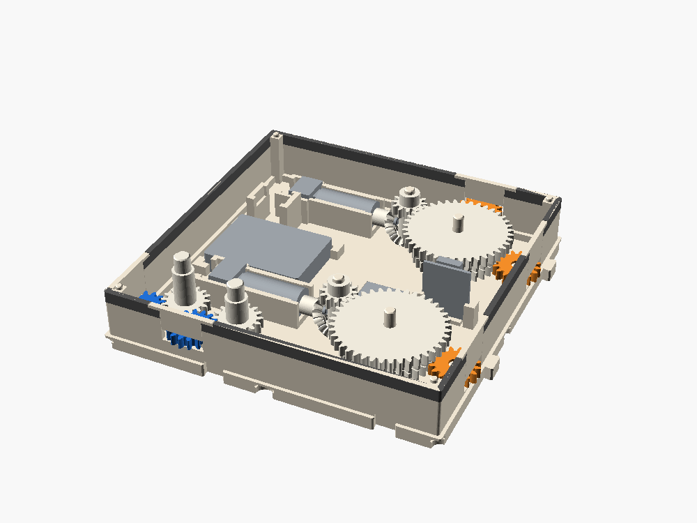
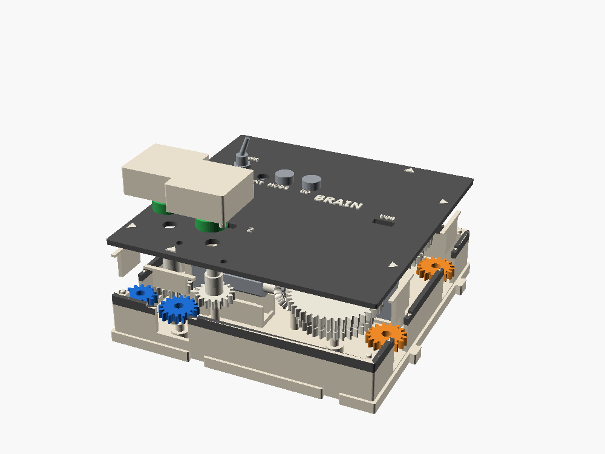
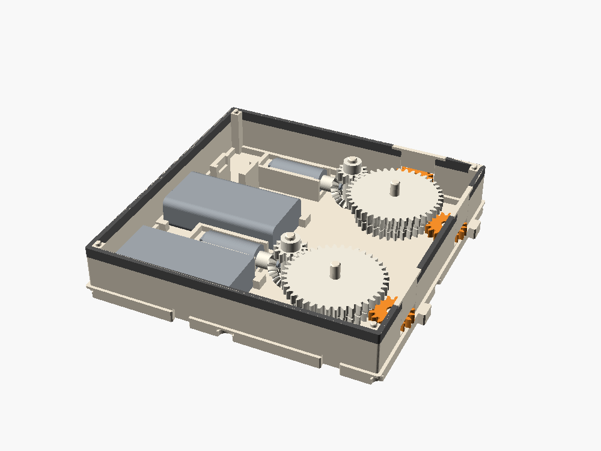
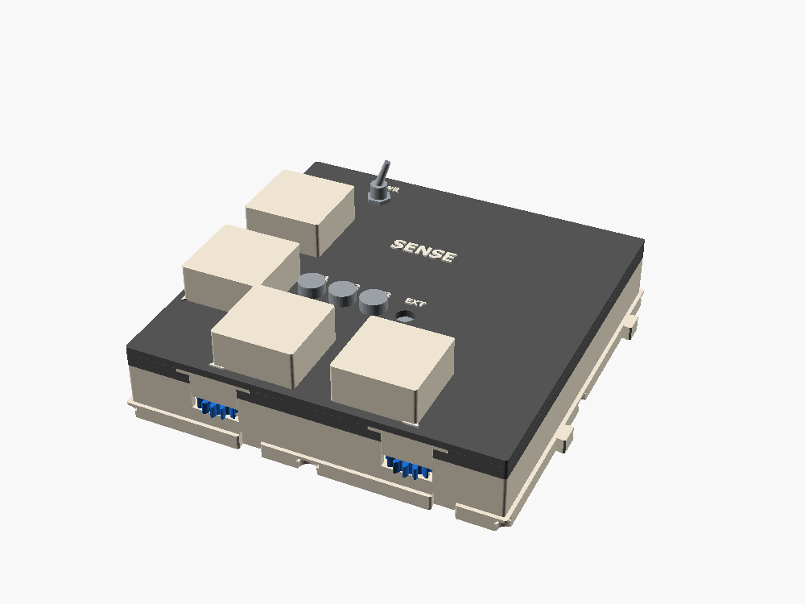

An ESP32-C3 in a 2×2 box that reads the angle of a gear lane and turns another. The gear boxes stay mechanical. The brain sits at the edge of a layout and supplies the three things gears can't do: branch on a value, multiply two moving values, and remember. Its headline lesson is closed-loop control.
Open loop means "run for two seconds" and land somewhere new every time. Closed loop means measure, compare, correct. On this grid it has a second meaning. Motion only flows east and north, so a gear chain can never come back to its own start. A mechanical feedback loop has to live inside one box, the way a governor does. A brain closes the loop with a wire, or by radio.
The same hardware teaches more. Where you measure matters: the motor encoder sits before the printed gears and never sees backlash, while the sensor on an input port does. Gain: too low lags, too high hunts across the backlash. Quantization: 4096 ADC steps, about 2600 encoder counts a port turn. And code as a box: a brain can impersonate any ratio box in three lines, which is exactly why it stays at the edge.
| BRAIN (XIAO) | DRIVE (receiver) | SENSE (transmitter) | |
|---|---|---|---|
| Footprint | 2×2 | 2×2 | 2×2 |
| Outputs | E1, E2 + N (two N20 trains) | E1, E2 + N (two N20 trains) | none |
| Sensed inputs | 2 (W, S) | none (all pins used) | 4 (W ×2, S ×2) + 2 spare analog |
| Contacts | GO, MODE, EXT jack | core button | 3 buttons + EXT jack |
| Power | 1S LiPo, 3.7 V | 2S pack, 7.4 V | 2S pack (takes 1S–3S) |
| Motor | N20 6 V 100 rpm + hall encoder | the motor box's N20 12 V 150 rpm | — |
| Port speed, budget | ~24 rpm, ~10 stages | ~37 rpm, ~12 stages | inputs cost 2 |
| Code | Arduino or MicroPython | Bambu's MicroPython (no third-party firmware) | |

Why N20s. A port wants about 40 mNm, and the motor box already proves an N20 train fits the 21.6 mm inside height. A 28BYJ-48 stepper is 28 mm across, so it doesn't fit, and it needs four pins and 5 V. A micro servo only turns 180°, so it suits a lever or a flag rather than a line. CyberBrick gets four servo ports free.
Why AS5600 sensors. They give an absolute angle on one analog pin, either direction, with no contact and almost no drag. Optical slot sensors on a printed disc are the cheaper, more visible alternative on the same pins. The ESP32-C3's ADC tops out near 2.5 V on both boards, so each sensor goes through a 10 kΩ over 22 kΩ divider.
| Pin | GPIO | Use | Note |
|---|---|---|---|
| D0 | 2 | GO button | 10 kΩ pull-up, strapping pin |
| D1 | 3 | IN1 angle | ADC1, via divider |
| D2 | 4 | IN2 angle | ADC1, via divider |
| D3 / D4 | 5 / 6 | output A, AIN1/AIN2 | PWM 20 kHz |
| D5 / D10 | 7 / 10 | output B, BIN1/BIN2 | PWM 20 kHz |
| D7 | 20 | encoder A | UART RX, free (USB serial is built in) |
| D6 | 21 | encoder B | through 1 kΩ: the boot ROM prints on this pin |
| D8 | 8 | EXT jack | 10 kΩ pull-up, strapping pin |
| D9 | 9 | MODE button | BOOT pin |
To add something, trade a pin: GO becomes a servo signal, EXT becomes full quadrature on one encoder, or two pins become I²C to an MCP23017 for sixteen more contacts.
CyberBrick is Bambu's toy-electronics system: one ESP32-C3 core board that plugs into a transmitter shield (a remote control) or a receiver shield (motors, servos, LEDs). The two shields use the pins completely differently, so one core can't be both. A transmitter box senses and a receiver box drives, and they pair over 2.4 GHz at about 10 m. Out of the box, with no code, a SENSE input's angle can already set a DRIVE motor's speed.
| Transmitter shield → SENSE | Receiver shield → DRIVE | |
|---|---|---|
| Supply | 4.5–12.6 V (1S–3S), 65 mA | 7.4–12.6 V (2S–3S), 3 A max |
| Inputs | 6 analog L1–L3, R1–R3 (GPIO 0–5), SH1.0 3-pin with 3.3 V; 4 digital K1–K4 (GPIO 6, 7, 21, 20), active low | none free |
| Outputs | none | 2 DC motors (HTD8811, GPIO 4/5, 6/7); 4 servo headers at 5 V (GPIO 0–3); 2 WS2812 ports (GPIO 21, 20) |
| In the box | AS5600s on L1, L2, R1, R2; buttons on K1–K3; EXT on K4; L3 and R3 spare | two N20 trains; LED windows on the lid; servo headers free |



A layout that closes a loop by radio: put SENSE directly north of DRIVE. DRIVE's N port meets SENSE's S1, so SENSE reads DRIVE's own output, while W0 reads a crank. SENSE sends DRIVE the command that makes one follow the other. The feedback crosses the layout through the air, which the gears alone can never do.
if box. If IN2 spins faster than a limit, or a trip flag closes EXT, stop output A and back output B off half a turn. Gears have no if. Variation: output A = IN1 + IN2, an adder in code beside the planetary adder.| BRAIN (XIAO) | ~USD | |
|---|---|---|
| 1 | Seeed XIAO ESP32-C3 | 5 |
| 1 | DRV8833 carrier (Pololu 2130; generic ~1.50) | 6 |
| 2 | N20 6 V 100 rpm with hall encoder | 16 |
| 2 | AS5600 module with magnet | 6 |
| 1 | 1S LiPo 803040, 1000 mAh, protected | 7 |
| 1 | MTS-102 toggle | 1 |
| 2 | 7 mm panel push buttons | 1 |
| 1 | 3.5 mm panel jack + switch lead | 2 |
| — | 470 µF, 100 nF ×2, resistors | 1 |
| — | wire, heat-shrink, JST-PH | 2 |
| Total | ≈ 45 | |
| CyberBrick pair | ~USD | |
|---|---|---|
| 1 | CyberBrick hardware kit (cores, transmitter shield, 7.4 V pack and charger; check it includes a receiver shield) | 45 |
| 2 | N20 12 V 150 rpm with SH1.0 leads | 8 |
| 4 | AS5600 module with magnet | 12 |
| — | dividers, capacitors, SH1.0 3-pin leads | 3 |
| — | 2 toggles, 3 buttons, 1 jack | 5 |
| Total | ≈ 75 | |
Prices are typical single-unit listings in October 2026, not quotes. The kit price is STEMfinity's listing. Bambu's own store pages couldn't be read from here.
Sources: Seeed XIAO ESP32-C3 wiki; Bambu Lab CyberBrick component list and user manual; CyberBrick MicroPython quick reference; rotorman/CyberBrick_ESPNOW wiki.